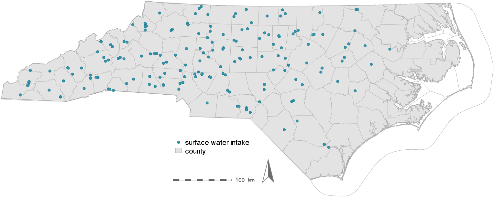

Geospatial tools for NC PFAS Testing Network
Helena Mitasova


V. Petras, B. Baines, S. Reckling, W. Reckling, A. Petrasova


Outline
- PFAS Testing Network geospatial data overview
- Drinking water sources: water systems, sources and sampling sites
- Sampling routing tools: conditions, modules parameters and results
- Rapid viewing of GPS data with attributes
- PFAS Testing Network on-line mapping tool prototype
- Groundwater seepage through streams
- Agreggated landfill and wastewater data
- Future work: DEQ data, new sampling round, new analytics data layers, tools
PFAST Network data management
PFAST Network Data Hub: RENCI infrastructure
- RENCI: integrated database with all collected data and related workflows
- see PFAST website for the type of data collected
- NCSU CGA: geospatial data acquisition, processing, visualization


PFAST Network geospatial data
Team 1. Drinking water sources: 403 sites

PFAST Network geospatial data
Team 2. Groundwater seepage in streams near Chemours: XX sites
PFAST Network geospatial data
Team 4: Atmospheric monitoring sites: XX sites
PFAST Network geospatial data
Team 5a: Landfills, waste water plants: XX sites
PFAST Network geospatial data
- Not added yet: Team 3 tap water, Team 5b fish, aligators
- Integration of all test data should provide a big picture of PFAS status in NC
NC image with ? or PFAS distribution in space and time and various environments

Drinking water sources
- Surface water sources: all sampled
- Multiple sources in some districts

Drinking water sources
- Groundwater wells: only one sampled, as selected by manager
- Challenges indentifying the sampled well - GPS was crucial
Drinking water sources
- SW + GW + PWSWS
- 403 sources out of 8411

Georeferencing drinking water sources
Several GPS coordinates may be associated with each drinking source- DEQ location (surface intake - blue, groundwater system - red)
- sampled water source / intake / well - green
- sampled tap


Drinking water sources routing tool
- re-optimized after additional sites are added
- routes with coordinates GPS for upload to navigation system (phone or car)
- screenshot of grass manual page - command and interface, describe parameters

Drinking water sources routing tool
Example routes 21 through 25, XX daysplanned speed 45mi/h, actual 39mi/h; time spent at site planned 30 min, actual 21 min
On-line tool for spreadsheet data
Preview you data and create simple maps with open source kepler.gl- name the columns with GPS coordinates as name_latitude, name_longitude
- use at least 6 digits for GPS coordinates (0.000010 deg is XX m)
- select only "clean" data (avoid text with commas, NaN, empty cells, etc.)
- export your sheet as csv
- drop your csv file into kepler.gl
On-line tool for spreadsheet data
Color and size points by attributesOn-line tool for spreadsheet data
Rasterize and view as 3D, compute heat mapReads also geo json files, has API for customization
From spreadsheet to database
Duke integrates sample analysis results in SQLite database - each site has number of attributes, including the PFAS concentrations and GPS coordinates
Unique ID for each sample is critical for data management
Samples are matched with DEQ PWSWS data - this provides additional variables: well gw production, adress, contacts, etc. and can be integrated with relevant GIS layers

WS service area
Who is drinking the water: sampled water sources are coupled with service area layer number of people, number of connections, history, etc.
Drinking water infrastructure
Some towns and cities have detailed data GIS datalayers on WS infrastructure

Contributing areas
We are deriving contributing areas for each sampling site
Potential sources in contributing areas
Airports, fire fighting training sites, military installations, landfills, water water plants
Land use history in contributing areas
Mapping land use composition since 1974 (landsat), using NWALT data
NC PFAS viewer: display data
Display sampled sites colored by selected atribute (e.g. concentration)
PostGIS database, QGIS and custom tools
NC PFAS viewer: query data
Query selected site, show concentrations, associated service area and its attributes: population served, production capacity
NC PFAS viewer: graph concentrations
Query a site, graph distribution of PFAS concentrations, display potential sources

NC PFAS viewer: filter data
Screenshots of the tool to illustrate the data and functionality
NC PFAS viewer: future
- Integrate with RENCI data hub and DEQ data
- Derive and add relevant data sets to support analysis and modeling
- Beyond viewer

Groundwater sampling
High resolution stream extraction - show location, photo?

Groundwater modeling
Mapping surficial acquifer thickness

Groundwater sampling
PFAS concentrations, adding the data to on-line tool
Landfill data aggregation
Identifying HUC for sampled sites, mapping HUC concentrations

Future if funding available
Geospatial Analytics: assist with understanding of sources, transport and fate Geospatial Simulations: scenarios, decision support, where to go from here